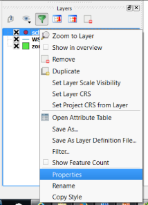
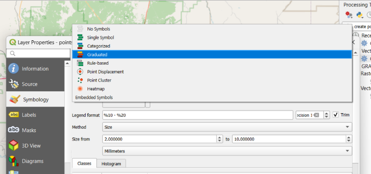
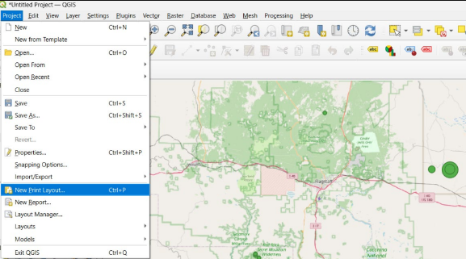
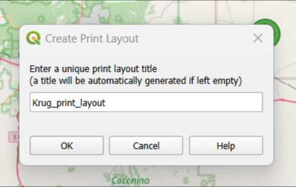
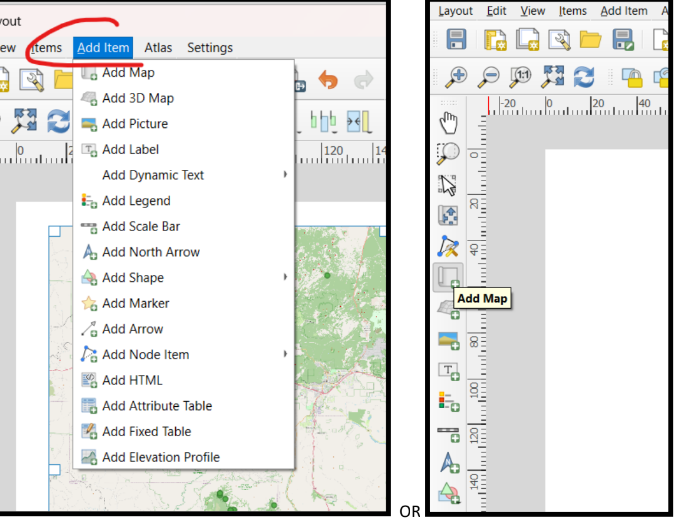
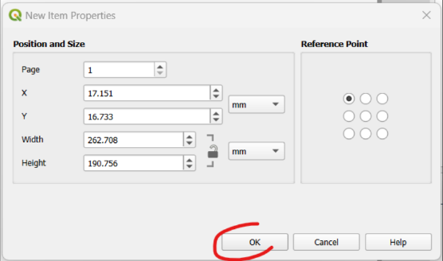
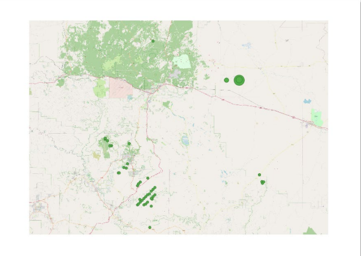
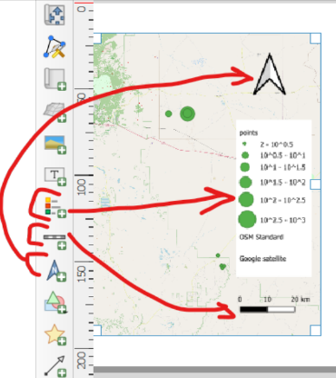
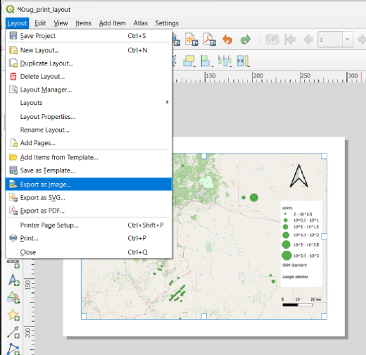

You then navigate to either the Style (symbology) or Labels tab accordingly.
Section 4: Mapping
In QGIS, the mapping process is split into two major categories: production and publishing. The production side (referred to as the Data View) allows for data manipulation (analysis) and representation (symbology); the publishing side (referred to as the Layout View) provides the tools and space for setting up the final product for printing or otherwise sharing the map (i.e. a map legend, a north arrow, a scale bar, etc.).
- Data View displays map allows you to manipulate the layers using tools to do things like change the layer order, customize symbology, and edit vector data.
- Layout View is accessed through the Print Composer, which opens in a new window and allows you to create the map page for final publication (this topic is covered in detail in the next section).

The main options for changing geospatial data representations include layer order, layer transparency, symbology, labels, and annotation. Apart from layer order and annotation, all of these are accessed from the Properties dialog box, which is accessed by right-clicking on the layer and choosing Properties.

Take some time to experiment with the visualization of your data. There are many many many...many configurations possible given the array of basemaps and symbols you may apply. If you are feeling confident, you might even run a new query in your Access database and import a layer with different types of information. The final step in this tutorial is the preparation of your map for printing. To do so, navigate to Project > New Print Layout...
Type a meaningful title for your layout in the dialogue and click OK.
↪

When the dialogue box opens, the map will be empty. To prepare your map for printing, navigate to Add Item > Add Map dropdown menu OR click the Add Map button on the sidebar.
After clicking the Add Map button, the cursor will turn to a registration mark +(a plus sign) in on the paper. Click on the paper and the New Item Properties dialogue will appear. Retain the defaults and click OK.
Your basemap and data will appear at the reference point. Depending on the basemap you selected, it may take a few moments for your new map to appear.
Now add essential North Arrow, Scale and Legend elements to complete your map.
When you have finished adding essential elements, navigate to Layout > Export as Image.
